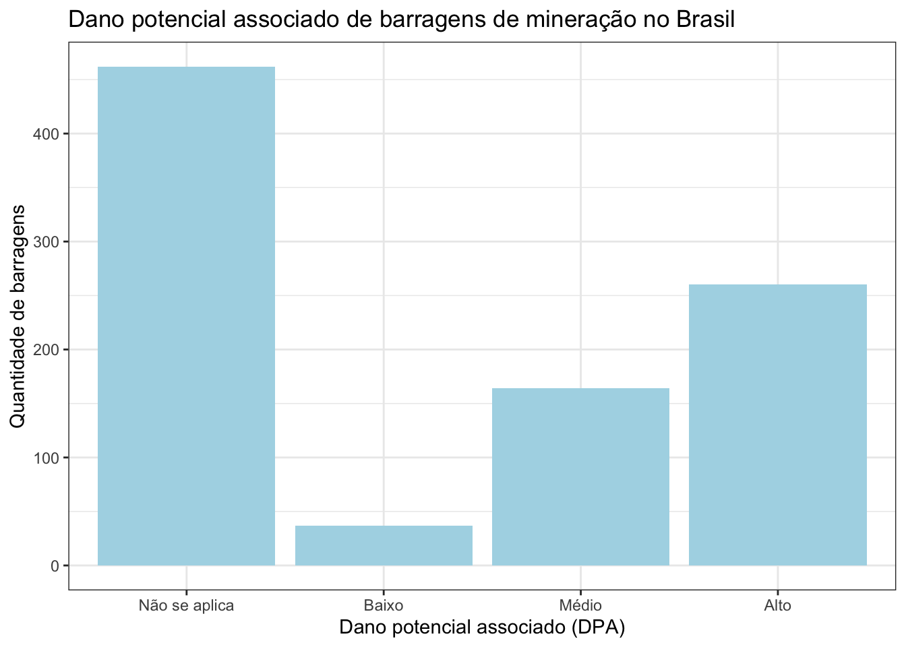

Barragens no Brasil
Objetivos
Este relatório tem como objetivo apresentar funcionalidades do R Markdown e do Quarto, utilizando dados públicos sobre barragens de mineração no Brasil.
Os objetivos específicos da análise são:
fazer uma tabela das barragens por estado;
fazer um gráfico do número de barragens por categoria de dano potencial associado;
Materiais e métodos
A base de dados disponibilizada pelo SIGBM - Sistema de Gestão de Segurança de Barragem de Mineração - apresenta dados referentes à barragens de mineração no território Brasileiro.
Barragens de mineração no Brasil
A base do SIGBM foi obtida no dia 01/11/2022 , e apresentou informações referentes à 923 barragens de mineração. A mediana do volume armazenado nas barragens é 128000.
| Estado | Número de barragens |
|---|---|
| MG | 354 |
| MT | 156 |
| PA | 114 |
| BA | 82 |
| SP | 68 |
| RO | 35 |
| GO | 22 |
| AP | 18 |
| MS | 18 |
| AM | 15 |
